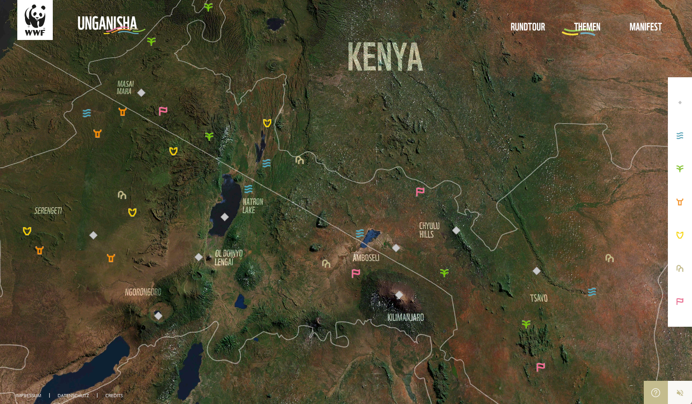

Review 2
Link: //www.erlebnis-unganisha.de/manifest
This website is cleverly designed in that it includes an interactive map which allows the user to scroll in, out and around the designated area. Each Icon can be clicked on to reveal stories from each area as well as pictures to help visualize. There is a very large amount of content, but it is neatly organized under each icon to not overwhelm the user with menus. The map also includes instructions on how to navigate when you first open it. The use of a 3D interactive map is much more creative than a dropdown menu in the top left corner which most websites tend to have. The use of ambient sounds is also a great way to immerse the reader.